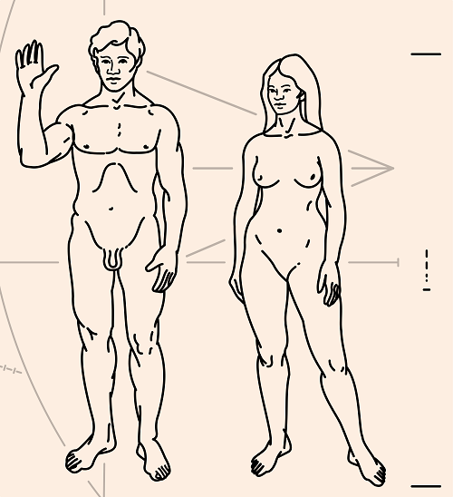

is an aspiring philosopher king, living the dream, travelling the world, hoarding FRNs and ignoring Americunts. He is a European at heart, lover of Latinas, and currently residing in the USA.


I discovered ROK around the same time I became the owner of a puppy, and there are many parallels I have noticed while I am out with my dog about women and relationships. Here are a few observations:
Who’s in control here?
While I allow my dog the occasional freedom of running off-leash, at all times it is clear that I am his master, and he has certain boundaries. He knows he must stay within eyesight of me at all times. No barking or aggressive behavior towards others will be allowed.
He is constantly looking back to me for approval that what he is doing is allowed. With women, it is important to maintain frame at all times. If you are successful with establishing yourself as the dominant partner in the relationship (you make the calls, you decide the dates), then your woman will be far less likely to attempt reversing the roles and become dominating and vindictive.
I enrolled my dog in a six-week training course, where we learned basic commands. More than the simple act of learning that the English pronunciation of “sit” means to place the rear end on the ground, however, is the importance that the dog learns that you are the master and you have certain expectations.
A well trained dog will know when it misbehaves, and will sense the disappointment or anger of its owner when it breaks the rules. Likewise, a woman should be trained to behave properly. Since Western civilization has abdicated its role in training members of both sexes how to behave politely and what proper roles are, men must take up this duty on our own.
If you firmly but politely lay out your expectations for your partner (no flaky behavior, I appreciate you cooking meals for me that we can enjoy together, you are to dress feminine but not slutty when we are in public, etc.), in my experience, the woman enjoys doing her part, the same way we enjoy our masculine role.
My dog knows how to walk on a leash, next to me, without dragging me all over the place. However, smells, sights of other dogs, and outside stimulus often get the better of him and he will wander too far away. A gentle tug on his leash and a verbal correction will quickly bring him back in line. Paying attention to the small details and “nipping it in the bud” before he’s off the sidewalk will bring him back to my side.
Likewise, it is far easier to maintain a happy relationship by addressing small missteps as they occur, before letting them blossom into major problems. Tell her to hit the gym when she’s gotten a bit out of shape, but don’t wait until she’s gained 20 pounds. Give her a limit on how much alcohol she can drink. Tell her she must inform you who she is going out with and where.
As we know, women are essentially large children, and like a teen who will gradually test the limits of his boundaries, a woman will push the rules to see how much she can get away with. Treat her like a father would his child, and let her know she is not to behave this way in the future. She will not only stop the harmful actions, but come to respect you even more.
Happy owner, happy dog.
The best way to train a dog is by offering treats, and giving strong, enthusiastic, loving verbal reinforcement when it does what is expected. The dog is happy that it is making its owner happy, and any owner can see this. Likewise, a woman’s instinctual nurturing side will blossom and she will be happy when she is pleasing her man. Kind of the inverse of happy wife, happy life.
The wife is happy because she is pleasing her husband, and she enjoys fulfilling her role in the relationship, the same way we naturally enjoy the rewards of hard work, the satisfaction of fixing things, and kind actions which bring a smile to the face of a woman who earns and has our affections.
The next time you see a dog, look closely. Does it have well groomed hair, or a matted, dirty, coat full of debris? Does it have a face of enthusiasm and happiness, or is it aggressive and violent? Does it playfully engage its owner and strangers, or is it skittish and anti-social? Does it respond well to its owner?
Likewise, there are visual clues that let us know the quality of women we are approaching. Does she groom herself well, with long, feminine hair, trimmed and painted nails, and conservative clothing? Does she smile? Does she interact socially with others, or is she glued to her smart phone screen and unable to hold a real conversation?
Does she have clear, radiant skin, or is her body mutilated with shrapnel and graffiti? Some women, and some dogs, simply are too far gone, and should be avoided, due to their unpleasant past.

Even a bad dog owner who has taught his dog no discipline, and has no control over his pet, cannot get around the fact that the dog relies on the owner for food, shelter, and water. The dog is subservient to its owner, and even in the worst of owners, this fact of nature cannot be reversed.
Likewise, a woman is naturally and normally the submissive partner to the man. No amount of short haircuts, business suits, you-go-girling or education can reverse the natural role than women play in the world. Women are different from men, and men are the more physically powerful, mentally strong, and emotionally caring of the two sexes. The unhappiness feminism has wrought on society is due to its attempt to subvert the natural order of things.

My dog greets me every day when I come home by enthusiastically running to greet me in the yard, smiling, and begging to play, much the way a traditional father from the 1950s would be greeted by his family when he returned home from work. His time is a rare commodity, and the family was excited to talk to him, and to be in his presence.
Occasionally when I arrive, my dog will fail to rush out to meet me, and will just sit in the porch, wagging his tail, waiting for me to approach. When this happens, I will stop, and wait until he runs out to greet me, as I am accustomed, before walking any further. Likewise, with a woman, when she slowly stops the nice little extra things you appreciated, cleaning your bed after sex, making you a snack, whatever it is, you must immediately address and reinstate before things slip further.

You can talk in a kind voice to a dog, and he will understand your loving happiness, and reciprocate, but beyond that, dogs are incapable of understanding you, interpreting your thoughts, empathizing, or using logic.
Likewise, it is a waste of time to get into deep discussions with women, expect them to rationalize or understand things, or even to truly empathize or love a man. This may upset you, but it is true. While a dog or woman can respect and honor you, and make you feel good, they cannot truly understand you, or love you the way you love them.

A tiny reward can go a long way. The item itself is of less importance than the meaning behind it. Dogs respond well to a new toy or special treat like a bone for learning a new trick, or behaving especially well.
Likewise, when your woman deserves it, or just because you are happy with how she is treating you, feel free to give her a small token of appreciation. Cook a special meal she likes. Take her out to a movie. Have a picnic with her. Make her feel special. When you are rewarding good behavior, you are encouraging it to continue.

One of these will be around a whole lot longer than the other
A dog is an optional thing a guy can bring into his life if he wants something to occupy his time, and reward him emotionally. The same should be true with women. Never enter into a relationship simply because “you’re single” or due to outside pressure from family. Never stay in a relationship that is not productive or meeting your needs.
Having a dog is a hobby, one that requires a little work every day to maintain, but should always be pleasurable to the owner. Having a significant other is the same. If the woman is not doing things for you that make you happy, move on. If she is unresponsive to the basic training that a dog would adopt, then she is failing at a very fundamental level, and you would like be much happier with a pet than a nagging girlfriend.
Finally, remember that while having an obedient one by your side is rewarding and comforting, there are thousands and thousands of them available, so never become too attached to one.
However, when speaking of dogs, they are incredibly loyal, protective, and offer unconditional love, and will in some ways be more consistent, reliable, and rewarding than a woman. It’s often said that sexbots will be the end of the modern feminist. Dogs provide most of the positive benefits of women except sex, and owning one can benefit a man greatly.
They are also a great yardstick of comparison. If your woman is not making you happier than your dog, it’s time to next her.
Read More: 38 Pictures That Show The Decline Of America Since The 1950s